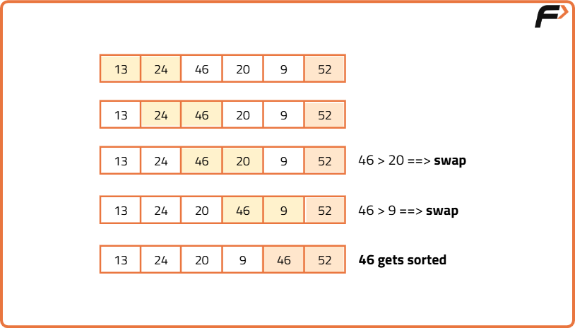
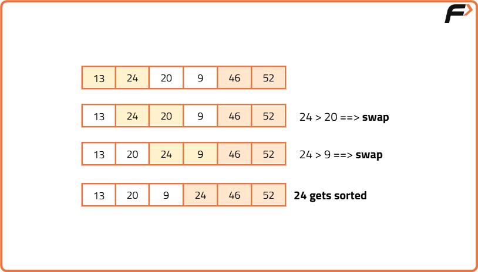
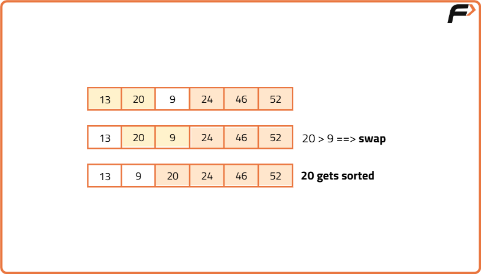
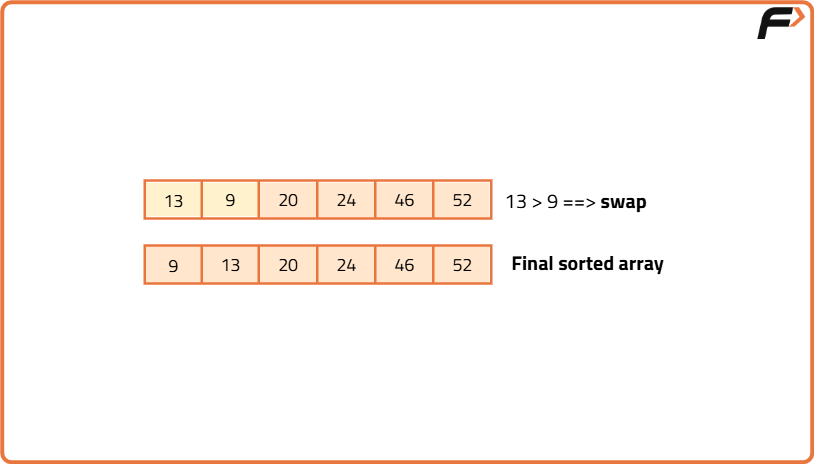

Bubble Sort Algorithm
Bubble Sort Algorithm .
Problem Statement: Given an array of N integers, write a program to implement the Bubble Sorting algorithm.
Examples
Example 1:
Input: N = 5, array[] = {5,4,3,2,1}
Output: 1,2,3,4,5
Explanation: After sorting we get 1,2,3,4,5
Example 2:
Input: N = 6, array[] = {13,46,24,52,20,9}
Output: 9,13,20,24,46,52
Explanation: After sorting we get 9,13,20,24,46,52
Disclaimer: Here is the practice link to help you assess your knowledge better. It's highly recommend trying to solve it before looking at the solution.
Brute Force
Algorithm
-
Select the range of the unsorted array:
Use an outer loop (
i) that runs backward fromn-1to0(wherenis the size of the array). The valuei = n-1means the range is from0ton-1,i = n-2means the range is from0ton-2, and so on. -
Push the maximum element to the end of the selected range:
Use an inner loop (
j) that runs from0toi-1. Compare adjacent elements and swap them ifarr[j] > arr[j+1]. Repeating this process ensures the maximum element in the current range moves to indexi. -
Progressively sort the array:
After each outer loop iteration, the last part of the array becomes sorted.
For example:
- After the first iteration, the element at the last index is sorted.
- After the second iteration, the last two elements are sorted.
- This continues until the entire array is sorted.
-
Complete sorting:
After
n-1iterations, the whole array will be sorted.
Approach:
Note: After each iteration, the sorted portion grows from the end, so the last index of the unsorted range decreases by 1 (controlled by i).
The inner loop (j) ensures the maximum element in the range [0…i] is placed at index i.
Dry Run





Code
#include <bits/stdc++.h>
using namespace std;
class BubbleSort {
public:
void bubble_sort(vector<int>& arr) {
int n = arr.size();
for (int i = n - 1; i >= 0; i--) { //Use two nested loops to iterate over the array
for (int j = 0; j <= i - 1; j++) {
if (arr[j] > arr[j + 1]) {
swap(arr[j], arr[j + 1]); //Swap arr[i] with arr[j+1]
}
}
}
cout << "After Using Bubble Sort:\n";
for (int num : arr) {
cout << num << " ";
}
cout << endl;
}
};
int main() {
vector<int> arr = {13, 46, 24, 52, 20, 9};
cout << "Before Using Bubble Sort:\n";
for (int num : arr) {
cout << num << " ";
}
cout << endl;
BubbleSort sorter;
sorter.bubble_sort(arr);
return 0;
}
Complexity Analysis
Optimal Approach
Algorithm
Optimized approach
Code
#include <bits/stdc++.h>
using namespace std;
class BubbleSort {
public:
void bubble_sort(vector<int>& arr) {
int n = arr.size();
for (int i = n - 1; i >= 0; i--) {
int didSwap = 0; //Use two nested loops to iterate over the array
for (int j = 0; j <= i - 1; j++) {
if (arr[j] > arr[j + 1]) {
swap(arr[j], arr[j + 1]); //Swap arr[j+1] with arr[i]
didSwap = 1;
}
}
if (didSwap == 0) {
break;
}
}
cout << "After Using Bubble Sort:\n";
for (int num : arr) {
cout << num << " ";
}
cout << endl;
}
};
int main() {
vector<int> arr = {13, 46, 24, 52, 20, 9};
cout << "Before Using Bubble Sort:\n";
for (int num : arr) {
cout << num << " ";
}
cout << endl;
BubbleSort sorter;
sorter.bubble_sort(arr);
return 0;
}